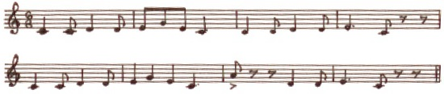

Günlük konuşmada sıklıkla ezgi olarak da ifade edilen melodi, müziğin belki de en bilindik unsurudur. Bir melodiyi bir veya birden çok çalgıyla çalmak mümkündür. Melodi, armoni ve ritimle beraber müzikteki üç temel unsurdan biri olarak kabul edilir.
Melodi, perdelerin kulağa hoş gelecek şekilde birbiri ardına dizilişidir. Perdeler bir uyumluluk hissi verir veya birbirlerine aitmiş gibi görünürler. Melodi, birden çok notanın bir anda hep birlikte değil, birbiri ardına çalınmasıyla armoniden ayrılır.
Zamanla melodinin tanımı daha eski bestecilerin kulağına cüretkâr ve hatta sert gelecek nota dizilerini de içerecek kadar genişledi. Mozart, Schubert ve Sibelius melodi yaratan dâhiler olarak görüldü. Diğer taraftan, örneğin Bahar Ayini adlı baleyi akıldan çıkmayan ezgilerle başlatan Stravinsky gibi modernistler, birçok 18. ve 19. yüzyıl bestecisinin ve hatta günümüzde bile bir kısım dinleyicinin gürültü olarak nitelendireceği melodiler yazdılar.
Genelde melodiler cümle denilen daha kısa parçalara ayrılırlar. Çoğunlukla bu cümleler kadans denilen dinlenme noktalarında son bulur. Bir melodinin genel yapısını oluşturan cümleler çoğu zaman bir soru ve cevap izlenimi uyandırır. Melodinin bir parçası müzikal bir fikir ortaya koyar ve diğer parçası da bunu tamamlar. Eğer bir cümle çözüme ulaşmamış veya tamamlanmamış bir kadansa işaret eden bir nota ile biterse, tüm cümle öncül olarak adlandırılır. Benzer şekilde, kulağa tamamlanmış gelen bir kadans ile biten bir cümle ardıl olarak adlandırılır.

EK BİLGİLER:
1. Ortaçağda birçok besteci, parçalarında ana tema olarak on beşinci yüzyıl Fransız ezgisi “L’homme armé” (Silahlı Adam) gibi basit, basmakalıp melodileri kullanmıştır.
2. “Twinkle, twinkle, little star” (Parla, parla, küçük yıldız) gibi daha modern melodilerin de aynı şekilde kullanıldığı olmuştur, ama modern zamanlarda orijinal bir melodi ortaya çıkaran yeteneğe çok daha fazla değer verilmektedir.
3. Bir melodi veya bir parçanın geniş bir çalgılar topluluğu tarafından icra edilmek üzere düzenlenmesine orkestrasyon denir. Konservatuarlarda verilen bazı dersler tamamıyla bu konu üzerinedir ve kimi besteciler özellikle orkestraya uyarlama becerileriyle takdir toplar.